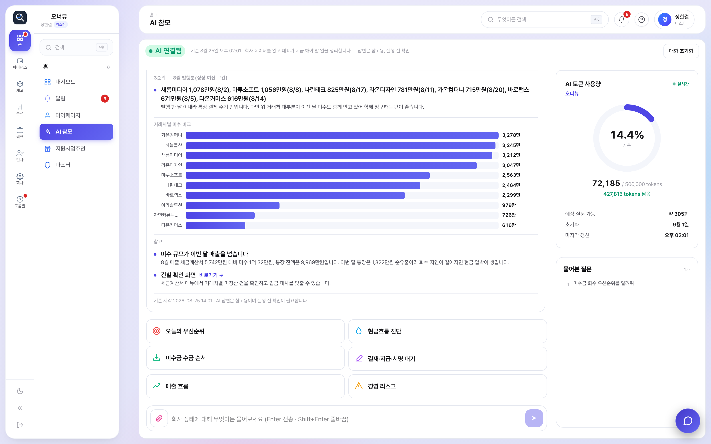
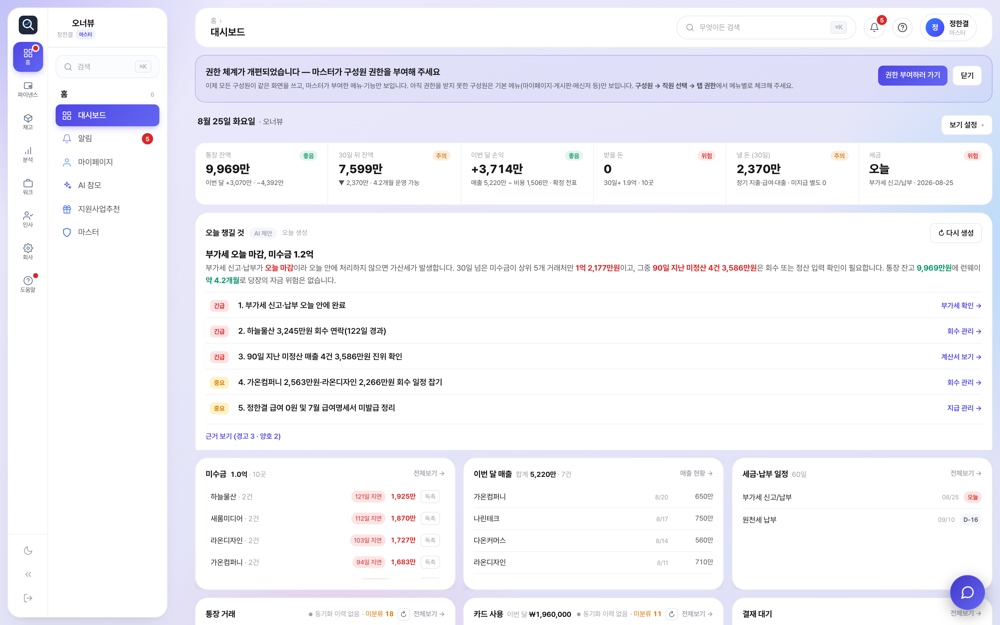
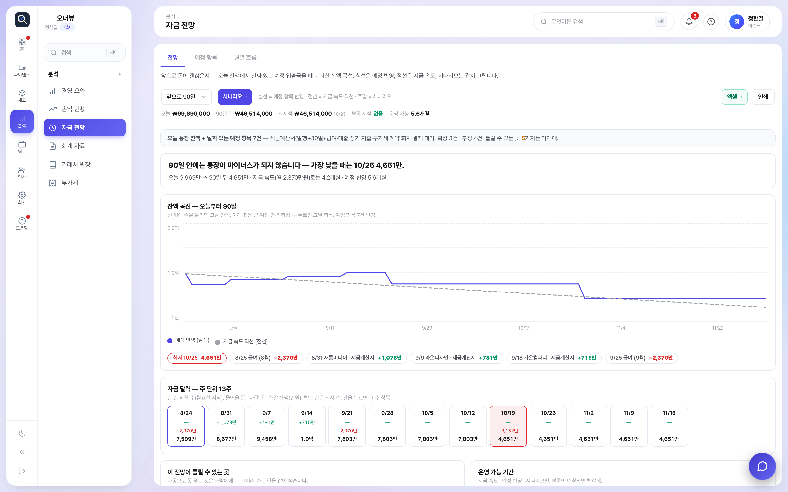
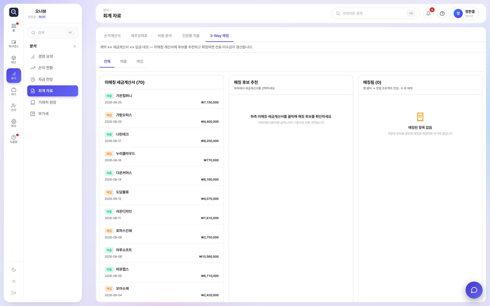
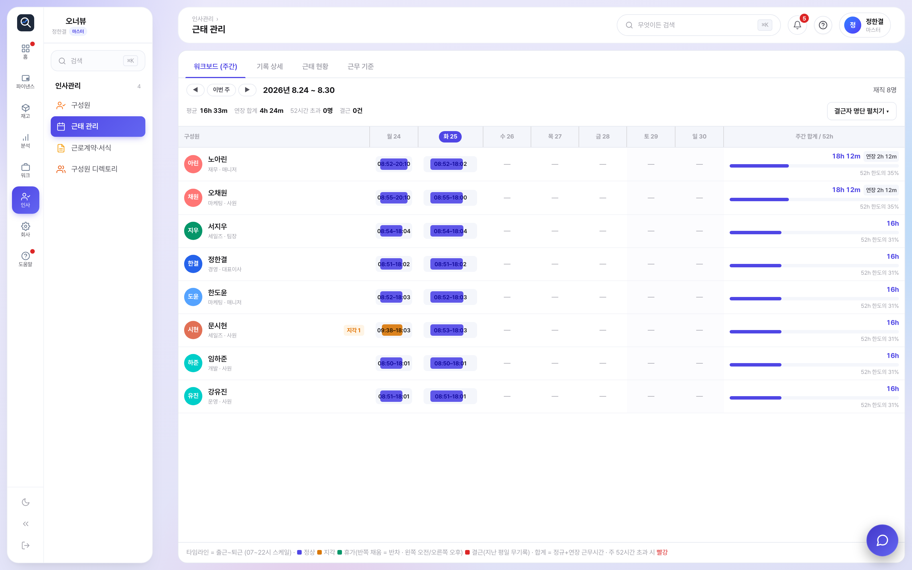
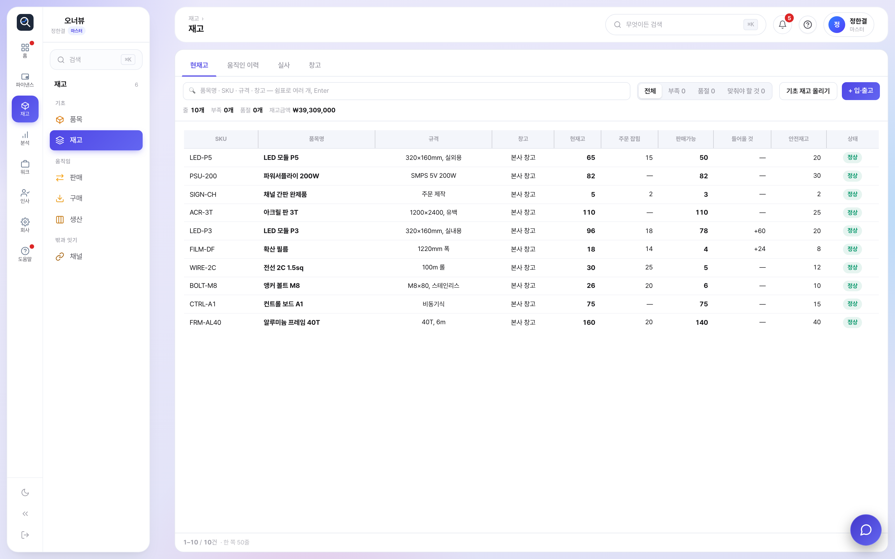
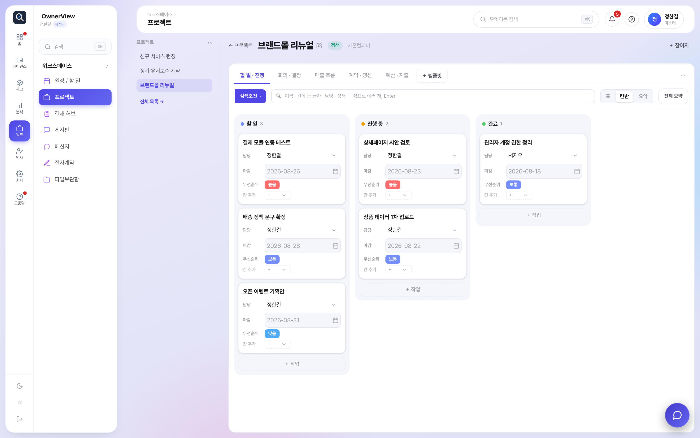
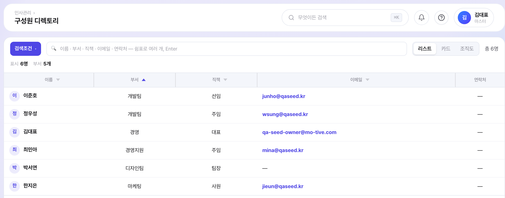

복잡한 건 자동으로, 쓰는 건 누구나 쉽게.
(주)모티브이노베이션 · www.owner-view.com
은행·카드는 실계좌에서 하루 두 번, 세금계산서는 국세청에서 자동으로. AI가 계정과목까지 붙입니다.
쓰던 견적서·계약서 PDF를 올리면 AI가 입력 칸 위치를 스스로 찾습니다. 양식을 바꾸지 않아도 됩니다.
출퇴근 기록, 경비 결재 상신, 근로계약서 작성까지 대화로 처리하고 사람은 확인만 합니다.
지금 쓰시는 시스템은 이 셋 중 몇 개가 되십니까?
출퇴근 · 근태 수정 · 경비 결재 상신 · 근로계약서 작성 ·결재 양식 생성까지 대화로 처리합니다.

회사 실데이터를 읽고 순서와 근거까지 답합니다. 실행은 확인 후에.
도입을 막는 가장 흔한 이유가 “쓰던 양식을 바꿔야 한다”입니다.오너뷰는 그 요구를 하지 않습니다.
지금 따로 쓰시는 게 이 중 몇 개인가요?


자금 전망 — 예정된 입출금까지 넣어 D+90 잔고를 예측하고 위험 구간을 미리 알려줍니다.

3-Way 매칭 — 계약·계산서·입금 세 금액을 자동 대조하고, 맞으면 전표 초안까지 만듭니다.
＋ 경영요약 · 손익 · 매출 · 비용 · 사람별 · 월결산 · 손익계산서 · 재무상태표
전자계약 서비스 · 결재 솔루션 · 협업 메신저를 따로 구독하지 않아도 됩니다.


프로젝트 이름을 누르면 바로 템플릿이 열립니다. 표·칸반·요약을 오가고, 요약은 결론·핵심 숫자·챙길 것으로 자동 정리됩니다.

이걸 쓰려고 오시진 않겠지만, 없어서 불편할 일도 없습니다.

IT · 소프트웨어 · 구성원 13명 · 2026년 8월 기준 실제 운영 계정의 수치입니다. 회사명은 비공개로 처리했습니다.
도입비 · 컨설팅비 0원 · 14일 무료 체험